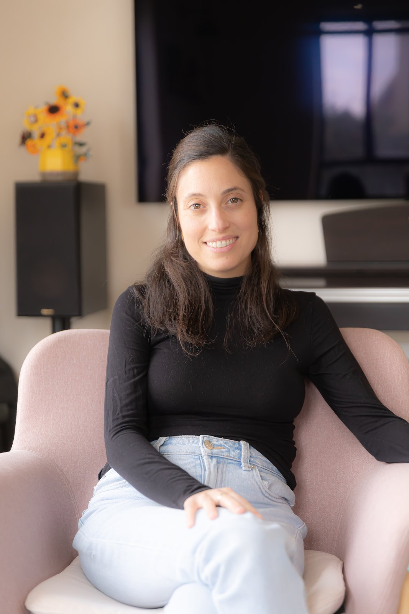

גיל סיטון
עו"ס קלינית M.S.W, מטפלת רגשית לילדים ולמבוגרים. 8 שנות ניסיון קליני — בכפר רתמים ובזום לכל הארץ. אמא בעצמי.

הכשרה ותעודות
הרקע המקצועי
תואר ראשון בעבודה סוציאלית — מכללת ספיר
תואר שני קליני M.S.W — אוניברסיטת בן גוריון בנגב
מוסמכת APT — Authentic Path Therapy — בוגרת בית הספר למטפלים בשיטת "דרך", הכשרה מעמיקה בת שלוש שנים
מתמחה בשיטת "מדברים ביחד" — גישה ייעודית לטיפול בילדים דרך שפת הדמיון, הסיפור והמשחק
8 שנות ניסיון קליני — טיפול בילדים, מבוגרים ומשפחות, כולל התמחות בפגיעות מיניות ובאלימות במשפחה
הדרכת הורים כחלק אינטגרלי מהתהליך — לא צופים מבחוץ, שותפים בעבודה
תחומי התמחות
במה אני מטפלת
- טיפול רגשי לילדים מגיל 4
- טיפול רגשי קלאסי במבוגרים
- הדרכת הורים
- עיבוד טראומה מורכבת
- ליווי לאחר פגיעות מיניות
- ליווי לאחר אלימות במשפחה
הגישה הטיפולית
איך אני עובדת
שתי שיטות טיפול מבוססות-קשר, כל אחת מותאמת לקהל היעד שלה.
APT — Authentic Path Therapy
לטיפול במבוגרים. עבודה עמוקה על דפוסים רגשיים, טראומה ויחסים. תהליך מובנה ובמקביל גמיש לקצב המתאים לכל מטופל.
מדברים ביחד
לטיפול בילדים. שפת המשחק, הסיפור והדמיון, עם ליווי הורים שוטף כחלק מהתהליך. הילד אינו נדרש להסביר במילים מה עובר עליו.